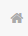

<main id="faultRecord-page" ng-controller="faultRecordController">
    <div class="home-title">
        
        <span class="home-text">故障记录</span>
    </div>
    <div class="home-second-title personManage-second-title">
        <p>故障列表</p>
        <button type="button" class="output-btn" data-toggle="modal" data-target="#faultRecord">导出</button>
    </div>
    <!--搜索行-->
    <div class="personManage-search-div">
        <input type="text" id="keywordinput" ng-model="keywords" placeholder="关键字">

        <span>     
        <input class="dateinput" id="date1"  ng-model="fromdate">
        <span id="middle">至</span>
        <input class="dateinput" id="date2" ng-model="todate">
        </span>

        <select class="dateinput">
          <option value="产品类型">产品类型</option>
          <option value="电视">电视</option>
          <option value="空调">空调</option>
          <option value="冰箱">冰箱</option>
          <option value="洗衣机">洗衣机</option>
          <option value="油烟机">油烟机</option>
          <option value="电饭煲">电饭煲</option>
          <option value="微波炉">微波炉</option>
          <option value="烤箱">烤箱</option>
          <option value="热水器">热水器</option>
        </select>
        <select class="dateinput">
          <option selected="" value="接入平台">接入平台</option>
          <option value="Platform-H">Platform-H</option>
          <option value="Platform-E">Platform-E</option>
          <option value="Platform-F">Platform-F</option>
          <option value="Platform-G">Platform-G</option>
          <option value="其他第三方">其他第三方</option>
        </select>
        <button ng-click="search()">搜索</button>
        <button ng-click="reset()">重置</button>
    </div>

    <!--表格-->
    <table id="faultRecord-table" class="table table-bordered table-hover">
        <thead>
            <tr>
                <th><input type="checkbox"></th>
                <th>序号</th>
                <th>UDeviceID</th>
                <th>接入平台</th>
                <th>产品类型</th>
                <th>设备型号</th>
                <th>故障内容</th>
                <th>上报时间</th>
            </tr>
        </thead>
        <tbody>
            <tr ng-repeat="x in faultRecords">
                <th><input type="checkbox"></th>
                <th>{{$index+1}}</th>
                <th>{{x.uplatAccount}}</th>
                <th>{{x.nickname}}</th>
                <th>{{x.sex}}</th>
                <th>{{x.place}}</th>
                <th>{{x.deviceAmount}}</th>
                <th><a ui-sref="userDetails({id:x.uplatAccount})">查看</a></th>
            </tr>
        </tbody>
    </table>

    <!--导出弹框-->
    <div class="modal fade bs-example-modal-lg" tabindex="-1" role="dialog" aria-labelledby="myLargeModalLabel" id="faultRecord">
        <div class="modal-dialog modal-lg" role="document">
            <div class="modal-content">
                <div class="pop-title">导出数据</div>
                <!--<div class="pop-second-title">当前选择数据 <span>10</span> 条</div>-->
                <div class="pop-radio-line">
                    <span>导出选择：</span>
                    <label><input type="radio" name="page" ng-model="selectFun" value="allpage"/>全部页批量</label>
                    <label><input type="radio" name="page" ng-model="selectFun"  value="currentpage"/>当前页</label>
                    <label><input type="radio" name="page" ng-model="selectFun"  value="result" />筛选结果</label>
                </div>
                <hr/>
                <!--可选择导出-->
                <div ng-if="selectFun == 'result'">
                    <div class="pop-checkbox-block">
                        <span>选择指标：</span>
                        <label><input type="checkbox" ng-click="select('uplatAccount',$event)" ng-model="uplatAccount">UDeviceID</label>
                        <label><input type="checkbox" ng-click="select('nickname',$event)" ng-model="nickname">接入平台</label>
                        <label><input type="checkbox" ng-click="select('sex',$event)" ng-model="sex">产品类型</label>
                        <label><input type="checkbox" ng-click="select('place',$event)" ng-model="place">设备型号</label>
                        <label><input type="checkbox" ng-click="select('deviceAmount',$event)" ng-model="deviceAmount">故障内容</label>
                        <label><input type="checkbox" ng-click="select('activeLevel',$event)" ng-model="activeLevel">上报时间</label>
                    </div>
                    <hr/>
                    <div class="pop-file-line">
                        <button ng-click="exportExcel(result)">导出</button>
                    </div>
                </div>
                <!--整体导出-->
                <div ng-if="selectFun == 'allpage'">
                    <hr/>
                    <div class="pop-file-line">
                        <button ng-click="exportExcel(allexport)">导出</button>
                    </div>
                </div>
                <!--当前页导出-->
                <div ng-if="selectFun == 'currentpage'">
                    <hr/>
                    <div class="pop-file-line">
                        <button ng-click="exportToExcel('#personManage-table','mysheet')">导出</button>
                    </div>
                </div>
            </div>
        </div>
    </div>
</main>